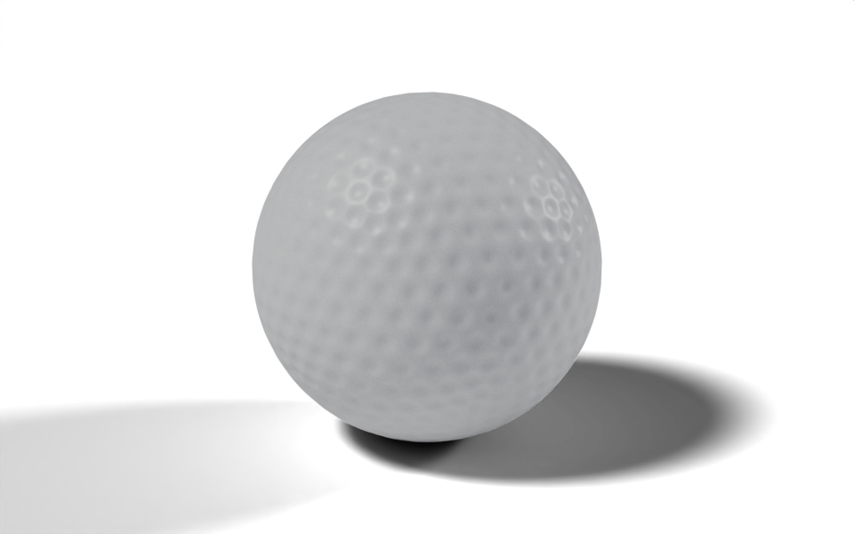

from nodebpy import geometry as g
from nodebpy import shader as s
with s.material("Golf Ball") as material:
coords = s.TextureCoordinate().o.object
grain = s.NoiseTexture(coords, scale=180.0, detail=3.0, roughness=0.65).o.factor
micro = s.NoiseTexture(coords, scale=650.0, detail=2.0).o.factor
white = grain.map_range(0.25, 0.75, interpolation_type="SMOOTHSTEP")
color = white.mix.color((0.69, 0.70, 0.67, 1.0), (0.91, 0.91, 0.87, 1.0))
# darken the inside of each dimple so the pattern reads at a distance
occlusion = s.AmbientOcclusion(distance=0.05).o.ao
color = (occlusion**2).mix.color((0.3, 0.3, 0.29, 1.0), color)
(
s.PrincipledBSDF(
base_color=color,
roughness=grain.map_range(0.2, 0.8, 0.32, 0.46),
normal=s.Bump(
height=grain * 0.7 + micro * 0.3, strength=0.16, distance=0.0025
),
)
>> s.MaterialOutput()
)
with g.tree("Golf Ball", is_modifier=True) as tree:
radius = tree.inputs.float("Radius", 1.0, min_value=0.0, subtype="DISTANCE")
with tree.inputs.panel("Dimples"):
layout = tree.inputs.integer("Layout", 4, min_value=1, max_value=6)
width = tree.inputs.float("Width", 0.075, min_value=0.0, subtype="DISTANCE")
depth = tree.inputs.float("Depth", 0.012, min_value=0.0, subtype="DISTANCE")
# one dimple centred on each vertex of a coarse icosphere
centers = g.IcoSphere(radius, subdivisions=layout) >> g.MeshToPoints()
distance = g.GeometryProximity(centers, target_element="POINTS").o.distance
profile = distance.map_range(
0.0, width, 1.0, 0.0, interpolation_type="SMOOTHERSTEP"
)
# push the dense surface inwards along its normal
inwards = g.Position().o.position.normalize() * -(profile * depth)
(
g.IcoSphere(radius, subdivisions=7)
>> g.SetPosition(offset=inwards)
>> g.SetShadeSmooth()
>> g.SetMaterial(material=material.material)
>> tree.outputs.geometry("Geometry")
)Golf Ball
geonodes
materials
fields
Dimple a sphere with a proximity field and shade it with a procedural material.

Download .blend The scene in this image: the node trees, materials, camera and lights.
A coarse icosphere supplies one point per dimple. A dense icosphere is pushed inwards wherever it is close to one of those points, and the depth of the push follows a smooth profile from the centre of the dimple to its rim. The script builds the material as well as the geometry.
How it works
Geometry.
- Geometry Proximity returns, for every vertex of the dense sphere, the distance to the nearest dimple centre.
distance.map_range(0.0, width, 1.0, 0.0, interpolation_type="SMOOTHERSTEP")turns that distance into a profile that is 1 at the centre and falls smoothly to 0 at the rim. Socket methods such asmap_rangeadd the matching node and return its result.- The surface is pushed in along the direction from the centre,
g.Position().o.position.normalize(), scaled by the profile and theDepthinput. On a sphere centred at the origin that direction is the normal. Layoutis the subdivision level of the coarse sphere. Blender counts the plain icosahedron as level 1, so level 4 gives 642 dimples, close to a real ball’s 300 to 500.
Material. s.material("Golf Ball") builds a material the same way g.tree builds a node tree. Two noise textures at different scales make the grain of the cover: they drive the colour, the roughness and a Bump node. An Ambient Occlusion node darkens the inside of each dimple, so the pattern still reads when the ball is small on screen. grain.map_range(...).mix.color(a, b) uses the remapped value as the factor of a Mix node in colour mode, which reads in the same order as the data flows. In the geometry tree, material.material is the bpy.types.Material, passed straight to Set Material.
Node trees
Original
Ported from the golf ball in demos/balls.py in geonodes, which builds the same material and the same proximity-driven displacement.